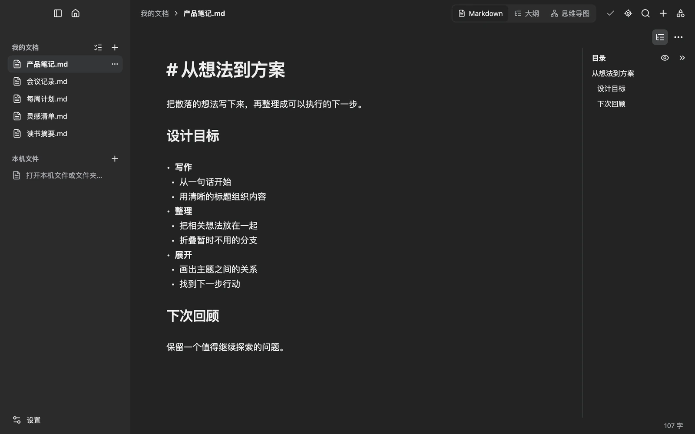
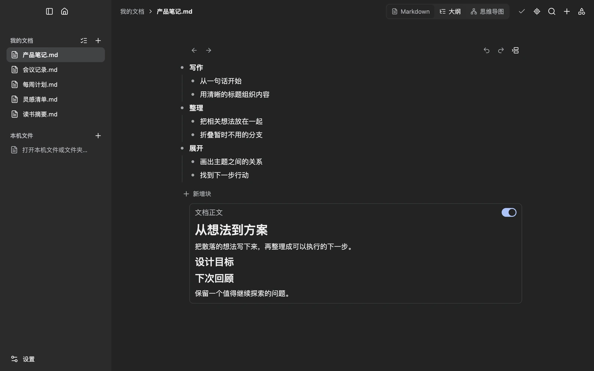
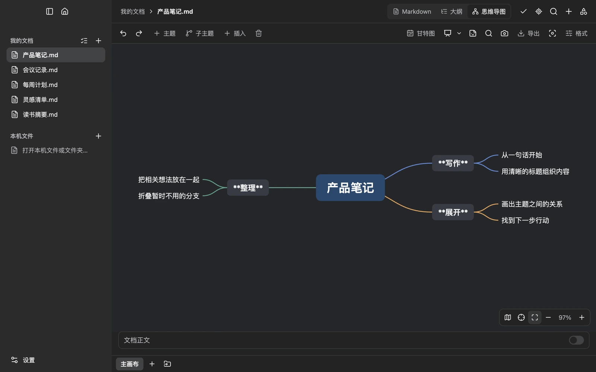
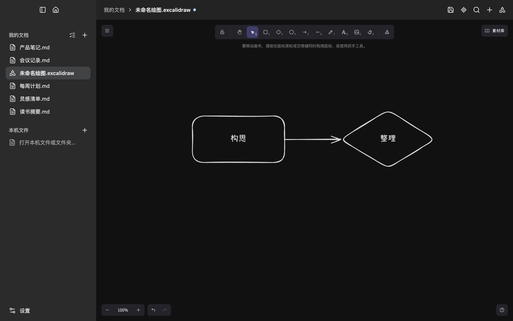

一份 Markdown，
三种编辑方式。
用实时编辑写作，用大纲理清层级，用思维导图展开结构。
在同一个本地工作区里，也能用 Excalidraw 绘图。

按任务切换视图
写正文、调整层级或整理分支时，直接切换同一份 Markdown。独立画布用标准 Excalidraw 文件保存。
写作时实时排版
使用标题目录、表格、公式和 Mermaid。需要时切换源码，或从右键菜单插入内容。
把内容拆成可编辑的块
用键盘缩进、移动和折叠块，也可以聚焦一个分支单独整理。

看清主题之间的关系
调整分支和主题结构，支持导入和导出 Xmind 工作簿。

在独立画布上画草图
用图形、箭头、文字和图片组织想法，保存为标准的 .excalidraw 文件。

从本机目录开始
把常用文档放在「我的文档」，也可以打开本机目录和独立文件。
在多个窗口里工作
可从文件菜单新建窗口，或用右键把文档打开到另一个窗口。
保留你的修改
支持自动保存、外部编辑冲突提示和崩溃草稿恢复。
下载 Ymd
正式版 __YMD_VERSION__